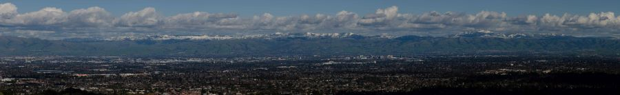
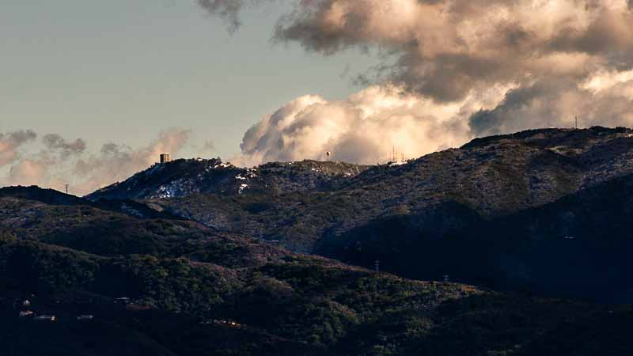
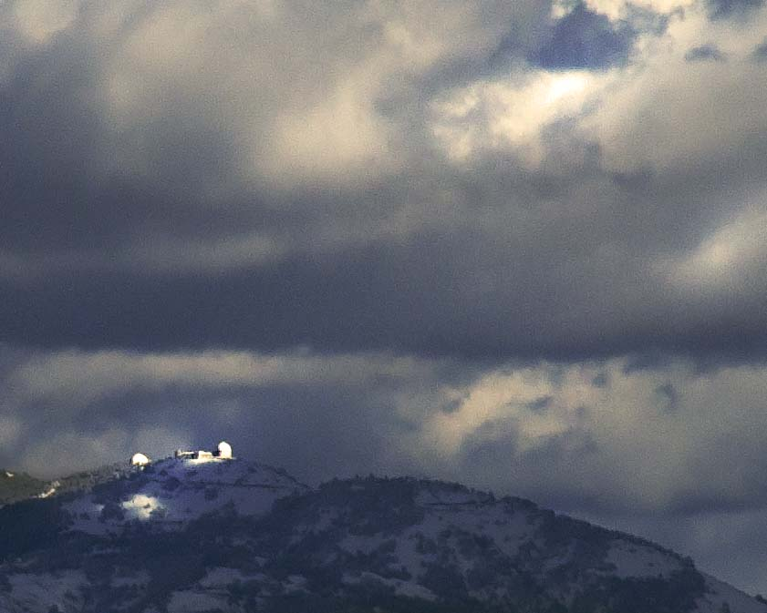

Bay Area snow day: Panorama
Full Size (27433x4192 115MP 20MB) More manageable size (5890x900 5MP 400KB)
{kind=link}
{kind=link}
Taken on February 5, 2019 after a night of snow on the entire (entire!) Diablo range. Taken from Maisie's Peak in the Fremont Older Space Preserve. An 18 image stitch of vertical images taken at 140mm form an image about 55-60 degree wide.
Bay Area snow day: Mt. Umunhum
Full Size
{kind=link}
Taken on February 5, 2019 after a night of snow at the higher elevations in the Bay Area. Taken from Maisie's Peak in the Fremont Older Space preservce. Mt. Umunhum was formerly a USAAF station, and the radar tower is still standing. You can read more about its interesting history on Wikipedia.
Bay Area snow day: Lick Observatory
Taken on February 5, 2019 after a night of snow on the entire (entire!) Diablo range. Taken from Maisie's Peak in the Fremont Older Space Preserve. My only lens on hand goes up to 140 mm, so this is about 1/25th of the entire image, cropped for emphasis. Visibility was really good that day, and it was really cold!
Watkins Pinnacles and Clouds Rest

Full size here
{kind=link}
This photo was taken on 12/28/2018 at the top of the Snow Creek trail switchbacks. I used a 35mm camera, developed it in my school darkroom, made an 8x10 print and scanned it.